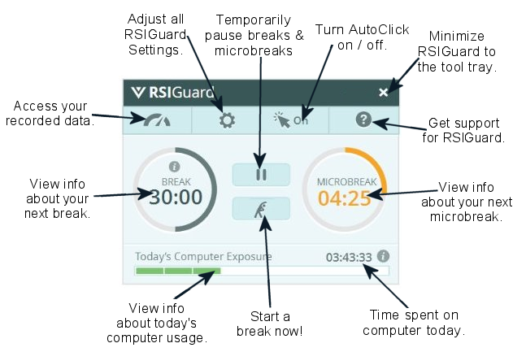
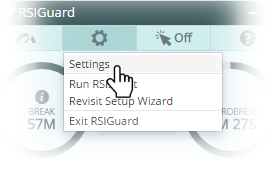

Thank you for taking the time to get to know RSIGuard!
Here are a few final tips to help you get the most out of your RSIGuard experience.
The main RSIGuard Window is your 'portal to RSIGuard'. Get to know it!

Much of RSIGuard's power comes from customizing it for your needs. Visit the Settings periodically to make sure you are using RSIGuard optimally!

From the RSIGuard Help menu, you can access a wide variety of help about RSIGuard, ergonomics, and more.
Congratulations, you have completed the introductory tutorial to RSIGuard!